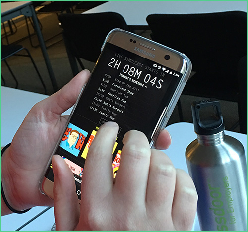
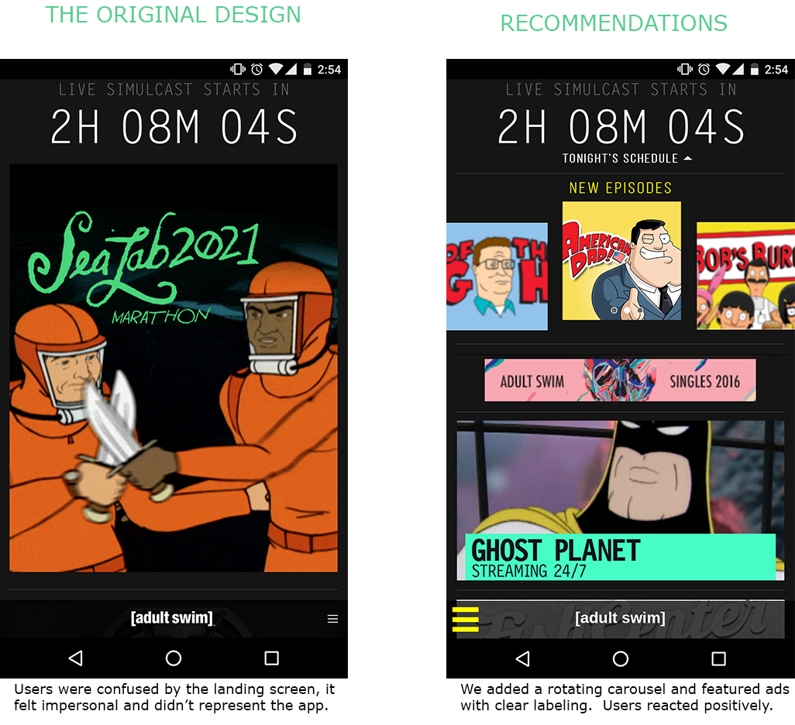
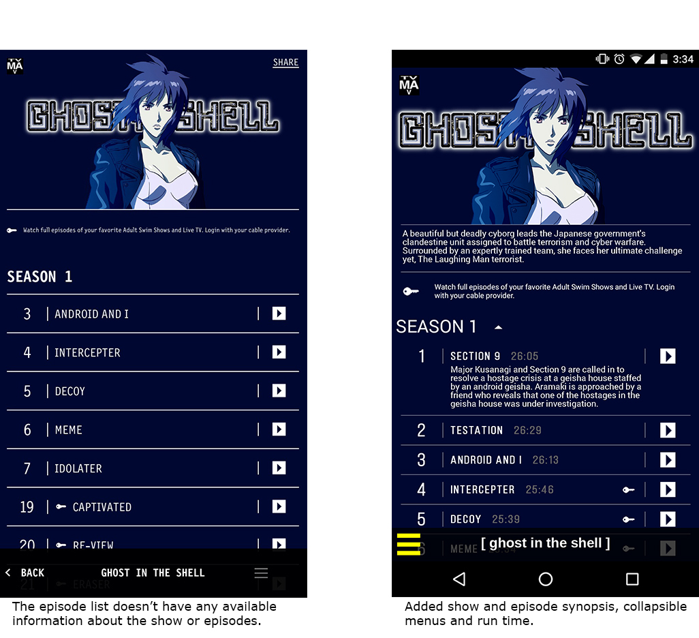
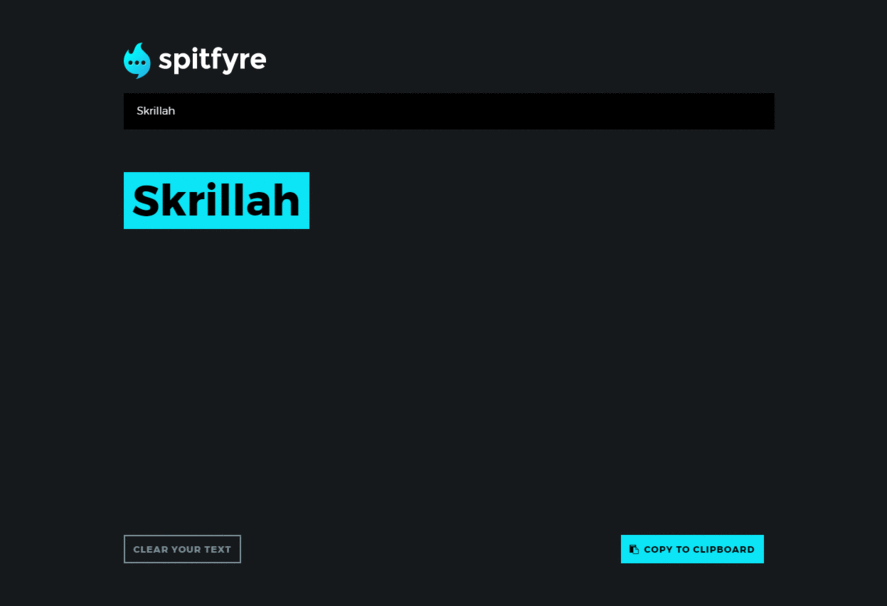

For one of my projects at General Assembly, I was placed on a team and given the task of doing a usability study of the current Adult Swim mobile application and making the appropriate design recommendations.
Melvin Taing | Emily Rowley
2 Weeks
Visual Designer, Interaction Designer, Research
Adobe Photoshop CC, GoogleForms, InVision, whiteboarding, paper sketching
I made and sent out a screen survey for mobile video streaming habits, including a few questions on which brands users preferred. My team chose three people to do usability studies with, and my researcher partner conducted the tests with the original Adult Swim design. While he did that, I did a competitive and comparative analysis to see what features the most popular brands from our survey had that Adult Swim was lacking and how we could integrate some of those features. We made a persona, Paul, and a context scenario in which he might be using the app.
The original tutorial that Meddle had was a single picture that tried to convey a really complex process with four different icons all tied together. When researching competitive dating mobile applications, I discovered that most apps used multiple screens or a video to show their process. Meddle's tutorial was buried under two different menus, while other apps had it either when first opening the app or right after creating an account. Initially I did several sketches, of the tutorial and onboarding process. After much discussion and whiteboarding, I took on the task of the tutorial. After much thought and so many iterations, I grabbed my team and proposed the idea of making the tutorial an animation.
My team really liked the idea, so I did some whiteboarding to demonstrate how many keyframes we could deliver in the timeframe.
The original tutorial that Meddle had was a single picture that tried to convey a really complex process with four different icons all tied together. When researching competitive dating mobile applications, I discovered that most apps used multiple screens or a video to show their process. Meddle's tutorial was buried under two different menus, while other apps had it either when first opening the app or right after creating an account. Initially I did several sketches, of the tutorial and onboarding process. After much discussion and whiteboarding, I took on the task of the tutorial. After much thought and so many iterations, I grabbed my team and proposed the idea of making the tutorial an animation.
Our design won first place in the General Assembly February Hackathon. Our group learned a lot from working together and we're working on V2 of Spitfyre now. Visit the finished product here.
